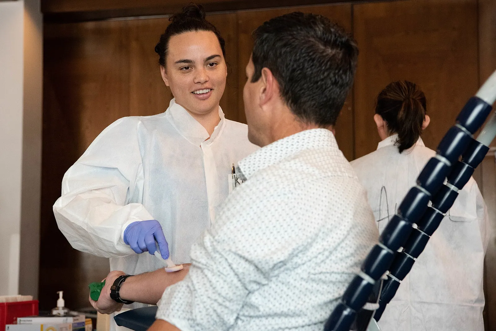
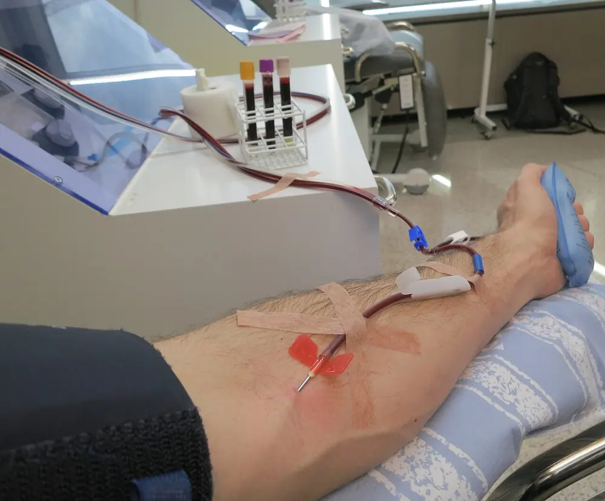
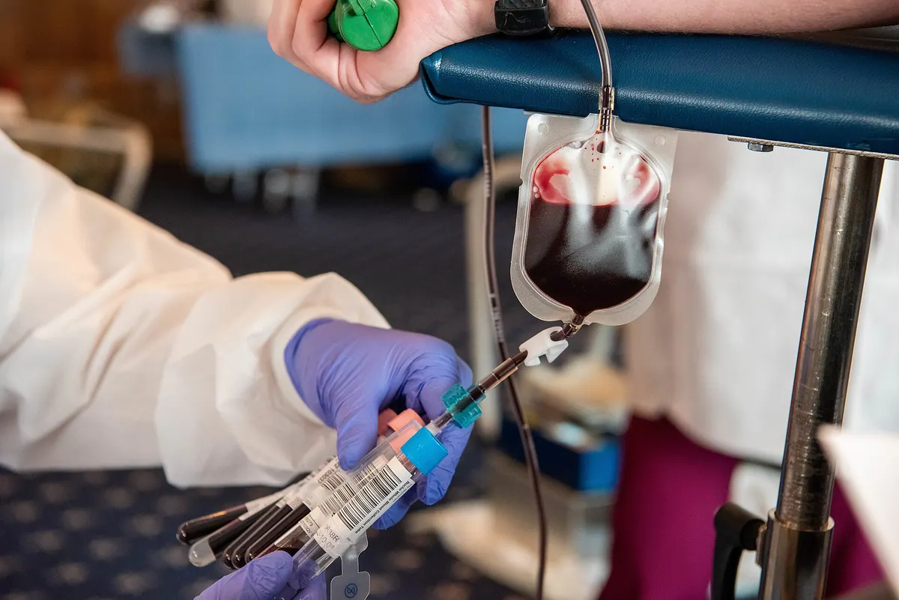

پروفایل میسازید
گروه خونی، شهر و آخرین زمان اهدا را ثبت میکنید تا فراخوانها دقیقتر به شما برسد.
همخون داوطلبان اهدای خون را بر اساس گروه خونی، فاصله و فوریت نیاز، هوشمندانه به نزدیکترین مرکز میرساند؛ بدون صف، بدون تماسهای پراکنده.

آمار صفحه نمایشی است و برای ارائهی نمونه آماده شده؛ در نسخه نهایی از API مراکز خوانده میشود.
از ثبتنام تا اهدا، همهچیز روشن و کوتاه است. شما فقط آمادگیتان را اعلام میکنید؛ بقیهاش با همخون.
گروه خونی، شهر و آخرین زمان اهدا را ثبت میکنید تا فراخوانها دقیقتر به شما برسد.
یک کلید ساده؛ هر وقت آماده بودید فعال میشوید و هر وقت نبودید، بیدردسر خاموش.
فقط نیازهایی که با گروه خونی و محدودهی شما همخوانی دارد، در اولویت نمایش قرار میگیرد.
زمان و مرکز پیشنهادی را تأیید میکنید و با راهنمایی کارشناسان مرکز، اهدا انجام میشود.
مناسببودن نهایی برای اهدا همیشه توسط پزشک مرکز اهدای خون تعیین میشود.
ساخت پروفایل داوطلببهجای پیامهای پراکنده و تماسهای بینتیجه، نیاز واقعی را به نزدیکترین داوطلبِ مناسب میرسانیم.

همهی مراکز همکار، استانداردهای ایمنی اهدا را رعایت میکنند و مسیر شما تا رسیدن به تخت اهدا کوتاه است.
نزدیکترین مرکز با توجه به فاصله، ساعات کاری و نوع اهدا پیشنهاد میشود؛ بدون جستوجوی دستی.
از فراخوان فوری تا تأیید نوبت، همهی تغییرها بیدرنگ در پنل و پیامک شما دیده میشود.
دسترسی به موقعیت مکانی فقط با اجازهی شما فعال میشود و هر زمان قابل لغو است.
وضعیت درخواست، پاسخ داوطلبان و زمان مراجعه در یک نمای ساده برای مرکز و اهداکننده روشن است.
از زبان داوطلبانی که مسیرشان با همخون گره خورده است.

اهدای پلاکت«پلاکت من برای یک بیمار کمخون مدام لازم بود. همخون هر بار نزدیکترین مرکز را نشانم میداد و دیگر بین اینهمه بیمارستان گم نمیشدم.»

اهدای خون کامل«گروه خونی O منفی کمیاب است. یک شب پیام فوری آمد، صبح رفتم و فهمیدم برای یک مادر باردار بوده. هنوز هم به آن شب فکر میکنم.»
«همیشه میترسیدم. با همخون زمان نوبت را گرفتم و کارشناس مرکز قدمبهقدم همراهیام کرد. حالا هر سه ماه میروم.»
ثبتنام کمتر از دو دقیقه وقت میگیرد. با ساخت پروفایل، فقط وقتی که واقعاً آمادهاید فراخوان دریافت میکنید.
اطلاعات شما محفوظ است و بدون اجازه در اختیار کسی قرار نمیگیرد.
اگر پاسخ سوالتان اینجا نبود، تیم پشتیبانی همخون هر روز از ۸ صبح تا ۱۰ شب در دسترس است.
گفتوگو با پشتیبانی
پاسخ معمولاً کمتر از ۱۵ دقیقه
۰۲۱–۰۰۰۰۰۰۰۰
نه. همخون فقط فراخوانها را به داوطلبان مناسب میرساند و زمان مراجعه را هماهنگ میکند. ارزیابی نهایی سلامت و مناسببودن اهدا همیشه توسط پزشک مرکز اهدای خون انجام میشود.
مدت زمان دقیق به نظر پزشک و نوع اهدا بستگی دارد. در فرم نوبتدهی، بازهی تقریبی هر مرکز نمایش داده میشود تا بتوانید برنامهی روزتان را هماهنگ کنید.
دسترسی به موقعیت فقط زمانی فعال میشود که خودتان اجازه بدهید و تنها برای پیشنهاد نزدیکترین مرکز استفاده میشود. هر زمان بخواهید میتوانید این اجازه را از پروفایل لغو کنید.
توصیههای آمادگی (خواب کافی، تغذیه و مصرف مایعات) را مرکز اهدای خون بر اساس شرایط شما ارائه میکند. اگر داروی خاصی مصرف میکنید، پیش از مراجعه با کارشناسان مرکز مشورت کنید.
ثبتنام و دریافت فراخوان برای داوطلبان کاملاً رایگان است. همخون هیچ مبلغی بابت واسطهگری اهدا دریافت نمیکند.